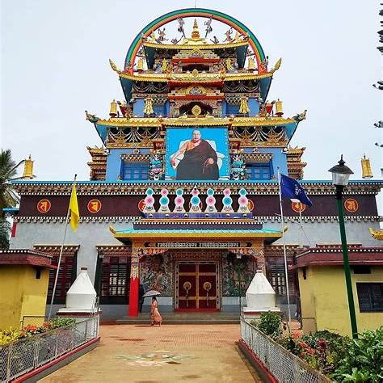
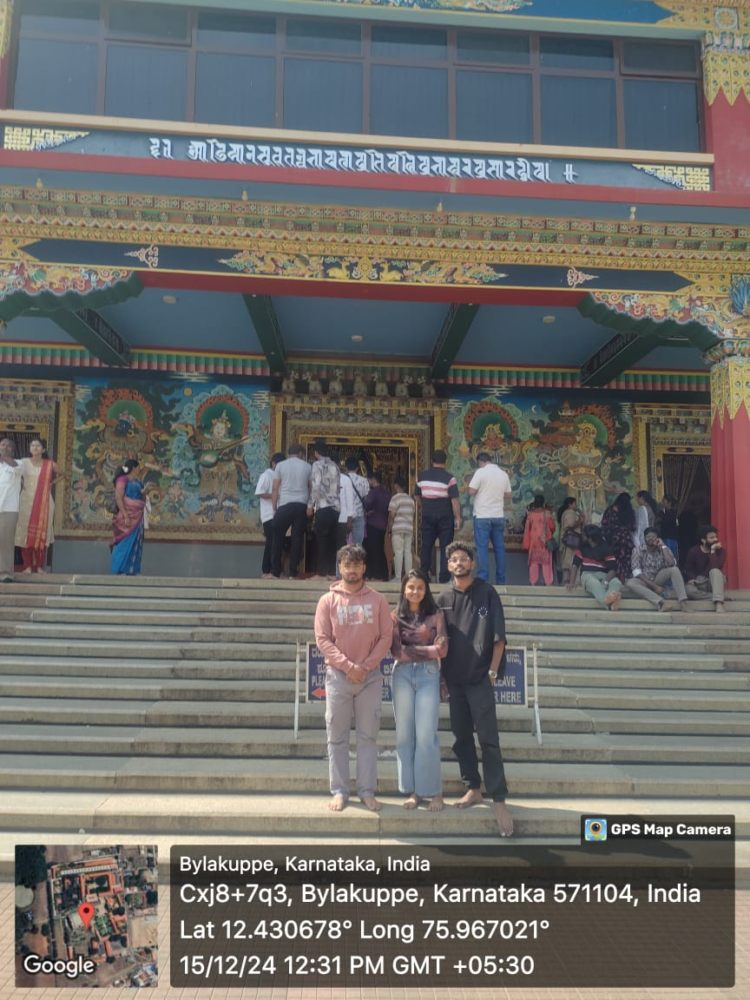
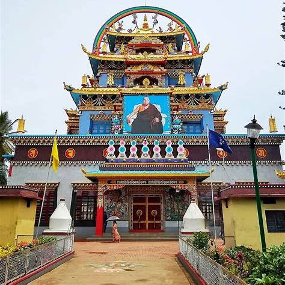
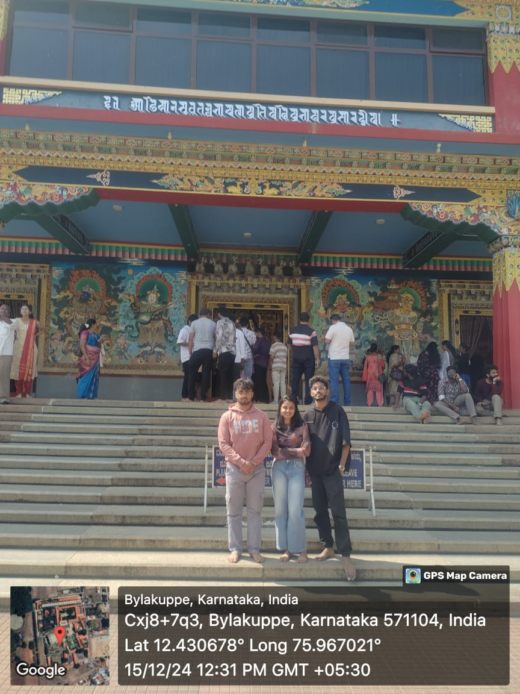

About the Golden Temple
The Namdroling Monastery, commonly known as the Golden Temple, is a prominent Tibetan Buddhist center located in Bylakuppe, near Madikeri in Karnataka, India. Established in 1963 by Drubwang Padma Norbu Rinpoche, it stands as the largest teaching center of the Nyingma lineage of Tibetan Buddhism worldwide.
Wikipedia
The monastery is renowned for its impressive architecture and serene environment. The temple houses towering golden statues of Buddha Shakyamuni, Guru Padmasambhava, and Buddha Amitayus, each approximately 40 feet tall. The walls are adorned with intricate paintings depicting various aspects of Tibetan Buddhist mythology, and the altar is decorated with flowers, candles, and incense sticks, creating a tranquil atmosphere for meditation and reflection.
Explore Bees
Home to a monastic community of over 5,000 monks and nuns, Namdroling Monastery includes a religious college (shedra), a junior high school, a hospital, and a home for the elderly. It serves as a major center for Buddhist education and practice, attracting students and practitioners from around the globe.
Wikipedia
Visitors are welcome to explore the monastery daily from 9:00 AM to 6:00 PM, with no entry fee required. The serene ambiance, combined with the rich cultural heritage, makes it a popular destination for those seeking peace and spiritual enrichment.
Coorg Tourism
Bylakuppe, where the monastery is situated, is one of the largest Tibetan settlements in India, established in the early 1960s. The area offers a glimpse into Tibetan culture and traditions, with several monasteries, nunneries, and a vibrant Tibetan community contributing to its unique cultural landscape.
Wikipedia
Gallery
.jpg) 



Plan Your Visit
- Location: Bylakuppe, near Madikeri, Karnataka
- Timings: 9:00 AM - 6:00 PM
- Entry Fee: Free
- Best Time to Visit: October to March
Author Photos